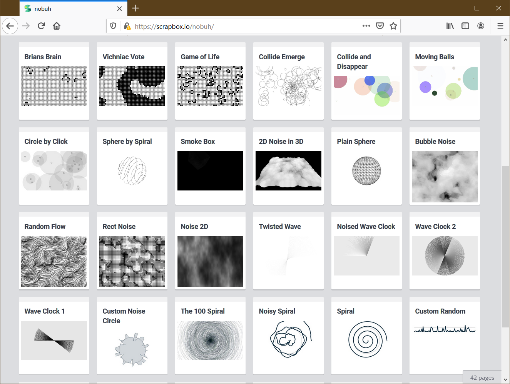

nobuh
Programs
napple1
- APPLE I emulator using ncurses.
Arts

Writings
2020-01-24
なぜアジャイルはウォーターフォールっぽく失敗してしまうのか
2019-07-05
ゲームのインフラをAWSで!実戦Tips全てみせます!
2018-08-30
はじめての OpenResty : ホットロード
2018-08-25
はじめての OpenResty : Hello World
2018-06-22
Unity Machine Learning Agents ではじめる強化学習
2018-02-20
入門 Keras (7) 最終回：リカレントニューラルネットワークを体験する
2018-02-06
入門 Keras (6) 学習過程の可視化とパラメーターチューニング – MNIST データ
2018-01-23
入門 Keras (5) 学習済みモデルと Flask で API サービスを作る
2018-01-09
入門 Keras (4) 多クラス分類 – Iris データを学習する
2017-12-26
入門 Keras (3) 線形分離と多層パーセプトロン
2017-12-12
入門 Keras (2) パーセプトロンとロジスティック回帰
2017-11-20
入門 Keras (1) Windows に Tensorflow と Keras をセットアップ
2017-11-14
高負荷を捌くDBチューニングノウハウを公開！PHPとMySQLの TCP TIME-WAIT チューニング(後編)
2017-11-13
高負荷環境でDBが直面する問題とは？PHPとMySQLの TCP TIME-WAIT チューニング(前編)
2017-06-30
JupyterNotebookとMySQLでゼロからはじめるデータサイエンス
2017-03-16
phpMyAdmin の赤い警告もこれで怖くない！MySQL 状態変数の徹底ガイド
2017-03-02
フォトバトラーが AI 技術と SQL でよみがえる！- Google Cloud Vision API
2016-11-11
MySQL を無料で使える db4free.net で MySQL 8.0 DMR を体験する
2016-08-26
[Video] MySQL Cluster に適したマッチョなクラウド SoftLayer
2016-05-30
MySQL は分散DBの夢を見るか、Google F1 論文を実装した TiDB を使ってみた
2015-11-19
MySQL 5.6 の ALTER TABLE と Percona Toolkit の pt-online-schema-change を比較してみた
2015-09-10
MySQL クラウド向け InnoDB チューニング
2015-09-07
Textadept で日本語を使えるようにする1行
2015-06-23
boot2docker を使って Windows で docker を体験する
2015-06-13
これだけみれば大丈夫ーCactiによるMySQLパフォーマンス監視のツボ
2013-08-20
これだけ見れば大丈夫！ーMySQLパフォーマンス監視のツボ（システム編）
2012-03-08
これだけ見れば大丈夫！ーMySQLパフォーマンス監視のツボ（クエリ編）
1993
縮退コーディングGAの遺伝的多様性